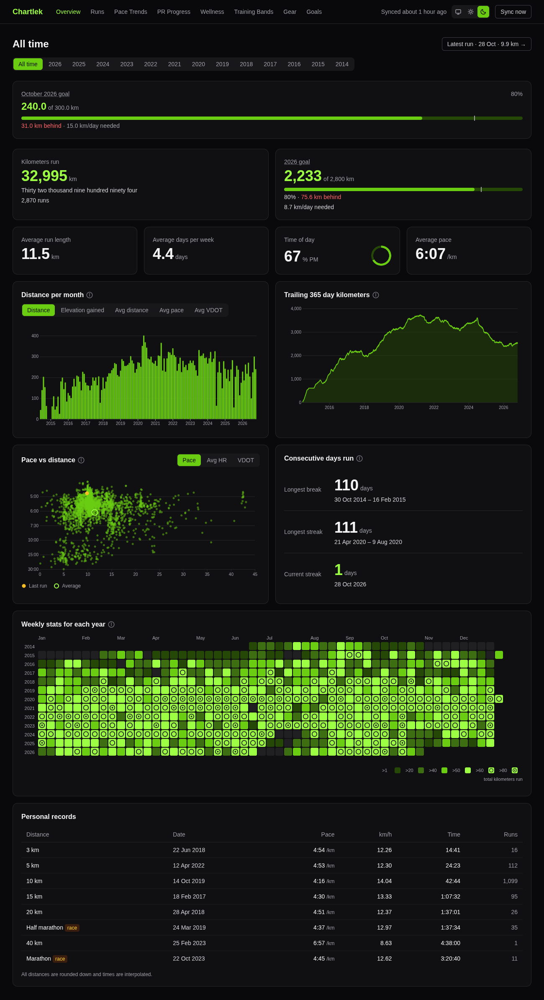
Overview
Pick All time, a year or a month and every widget follows: goal tiles, distance per period, trailing kilometers, pace against distance, streaks, a weekly heatmap and personal records. Light, dark or System theme.
Every run you've ever done, charted.
A self-hosted running dashboard for your Garmin history. It caches your runs in SQLite and draws them with D3: per-run heart rate zones, wellness data, Strava gear, weather and terrain maps.
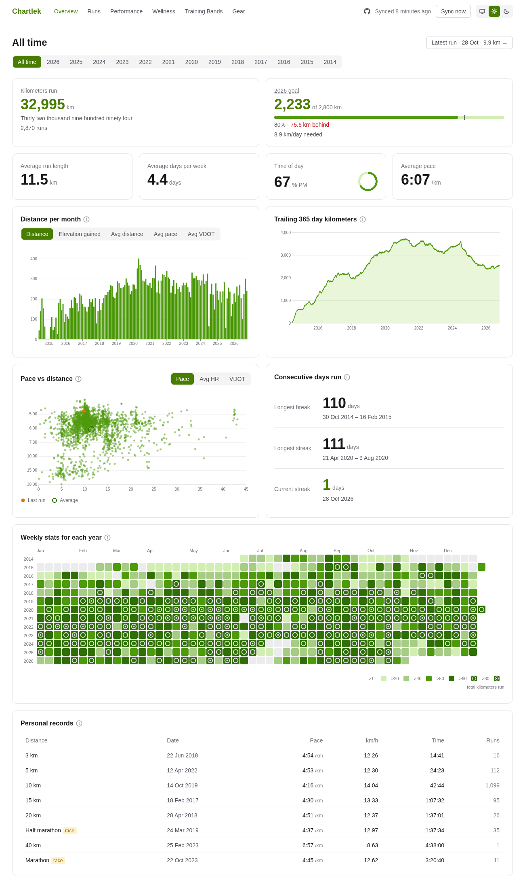
The charts are not pictures. Most of the value is in moving the pointer over them.
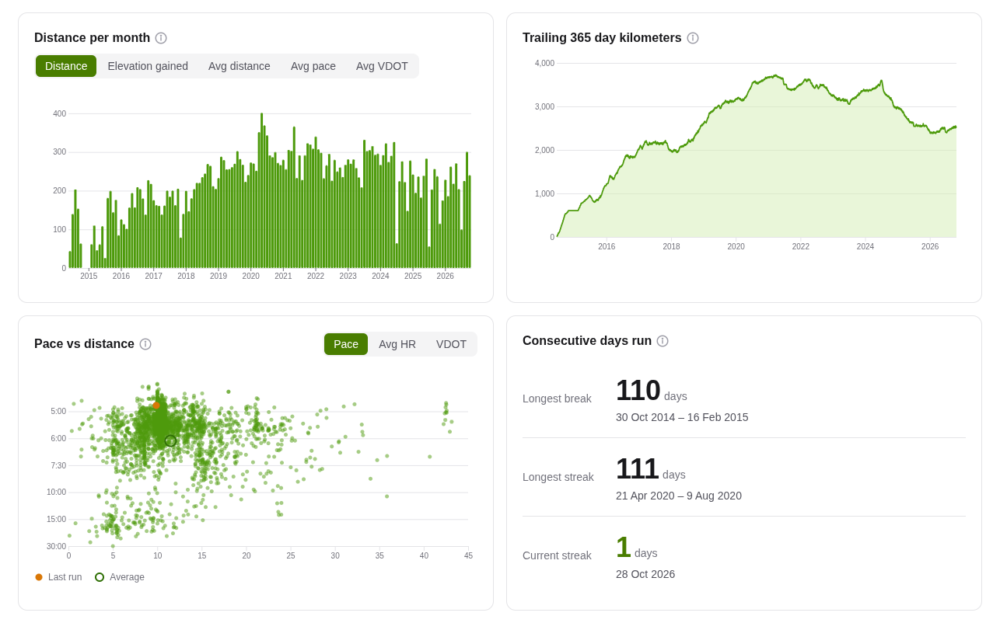
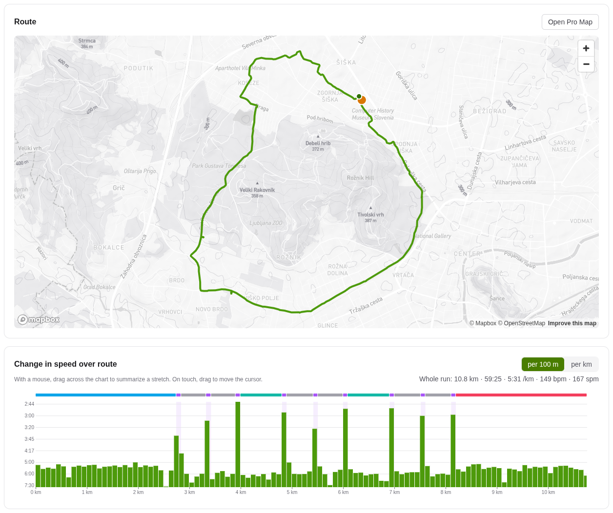

Pick All time, a year or a month and every widget follows: goal tiles, distance per period, trailing kilometers, pace against distance, streaks, a weekly heatmap and personal records. Light, dark or System theme.
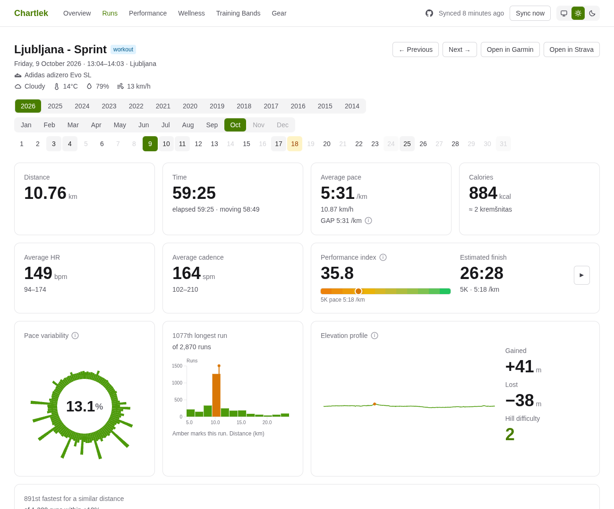
Everything about one run: weather, gear, a VDOT performance index with an estimated finish time, notables, workout steps, a pace variability wheel, heart rate zones and one shared cursor across the route map and charts.
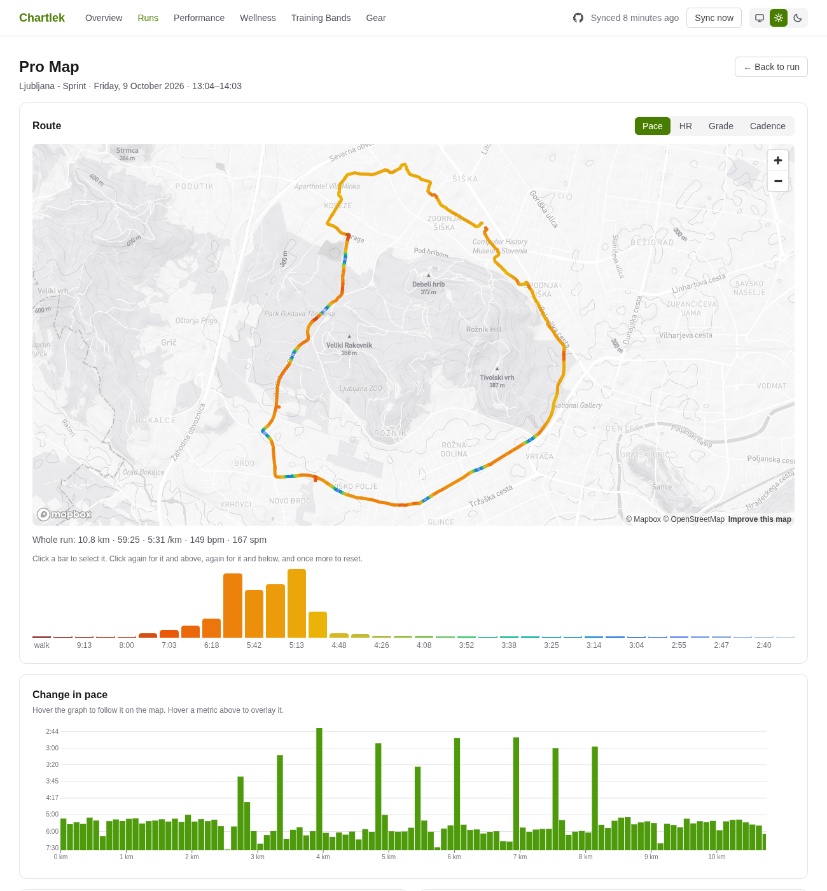
A full-page map of one run, colored by pace, heart rate, grade or cadence. Click a bar to isolate a bucket, or pick the fastest segments and splits.
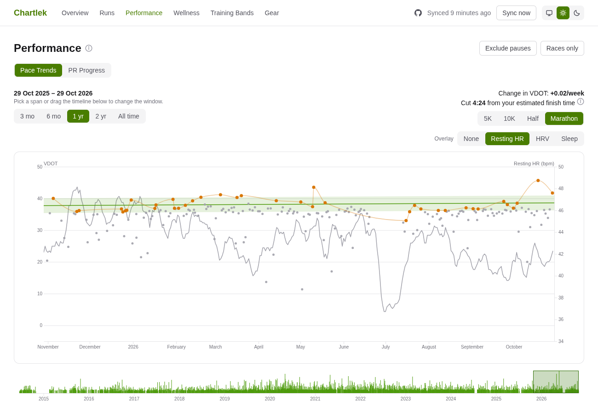
The first tab of Performance. Is your fitness going up? A fitted trend through your best runs, the change in VDOT per week, and an optional overlay of resting HR, HRV or sleep.
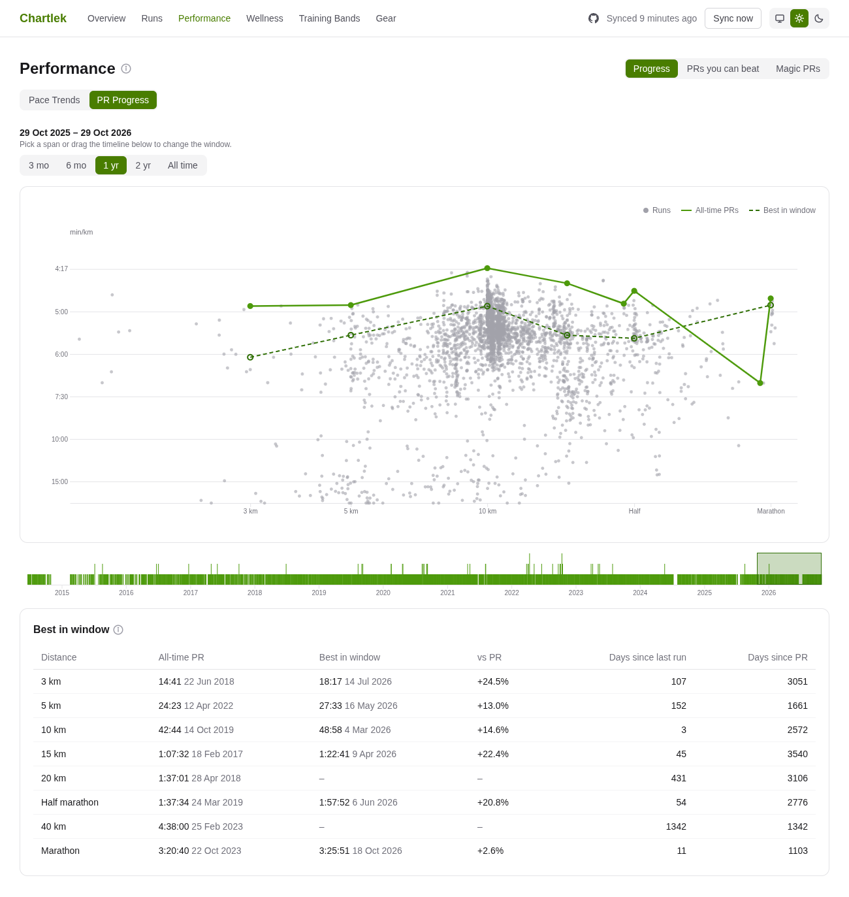
The second tab of Performance. Every run by distance and pace, your all-time best at each benchmark distance, the PRs you can beat next, and the next round time below each PR.
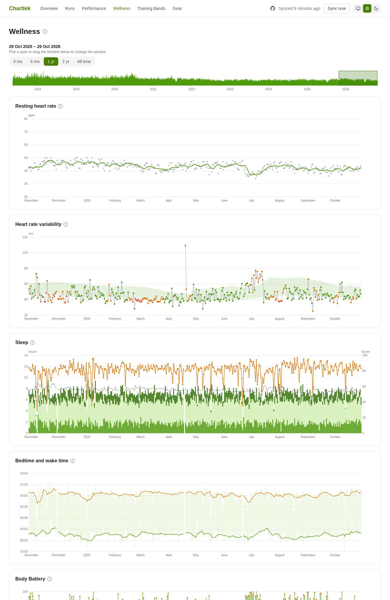
Garmin health data for your whole history on one timeline and one hover cursor: resting HR, HRV, sleep, Body Battery, stress and weight.
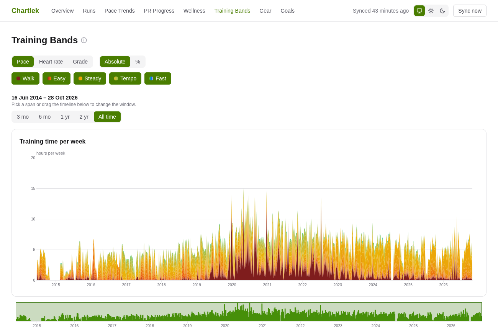
Your weekly training time stacked by pace, heart rate or grade. It answers how much of your running was actually easy.
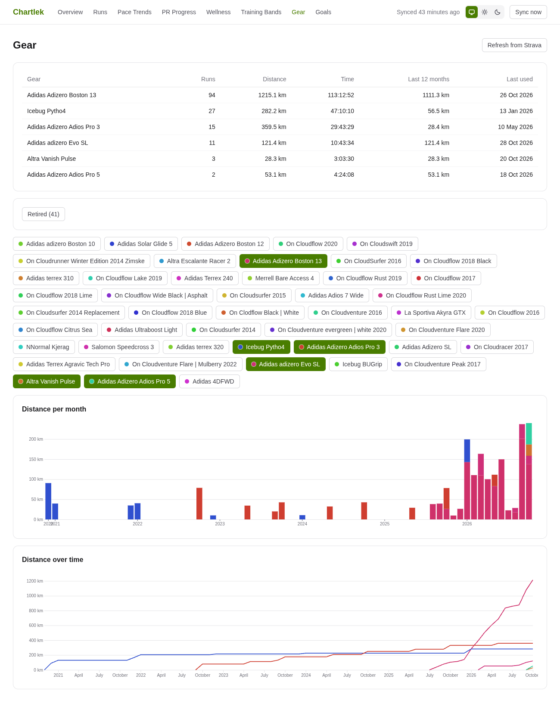
Your Strava shoes, read-only: runs, distance and last used per pair, with distance per month and over time.
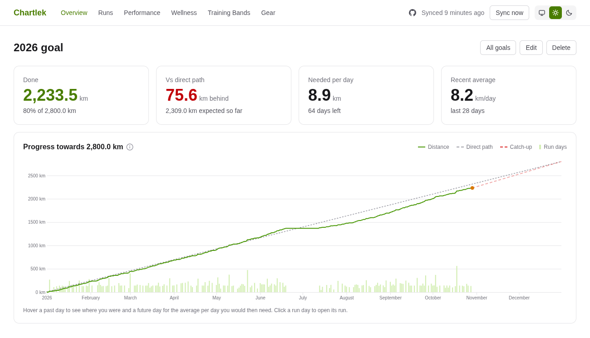
Set monthly and yearly distance goals from the Overview: the goal tile sits beside Kilometers run, and any year or month without one has a create link. The goal page adds a direct path, the distance needed per day and a catch-up line when you fall behind.
Chartlek runs on your own machine. Everything lives in SQLite on your disk. It only reads from Garmin and Strava and never writes back, and there is no analytics.
You need Docker with Compose and your own Garmin Personal API key. Then:
git clone https://github.com/miharekar/chartlek && cd chartlek
bin/configure # writes .env, add your Garmin key
docker compose up -dOpen http://localhost:9295. The README has the variables and the first run.
Chartlek is a personal project. There is no hosted version and there won't be one: you run it yourself, at your own risk, and keep your keys and health data safe. It has no authentication, so keep it on a private network. Read more.